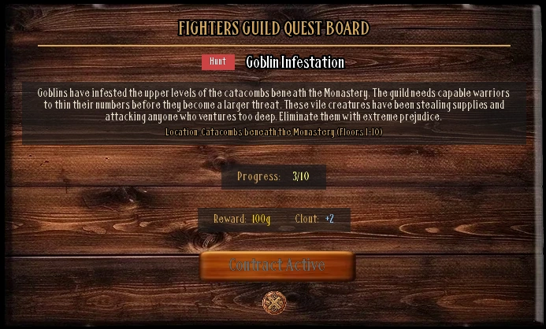
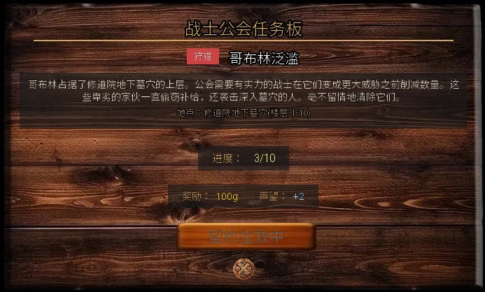

Select a screenshot to enlarge it. Screens show example inventories and progress.
Visit the Fighters Guild in Medieval, Kings Demesne for 26 sequential contracts, combat lessons and battle elixirs. There is no membership trial: enter and open the Quest Board.
- Visit 10:00–20:00 and accept a contract before entering the dungeon.
- Use the contract’s ordinary-dungeon floor range. Infinity Dungeons do not advance these contracts.
- Return to the board, claim the reward, then accept the next contract.
Accept a contract and prepare
The board offers one current contract at a time. Hunt and sample progress starts after acceptance; previous kills and mining inventory do not replace the contract counter. Progress can continue across days, so you do not need to finish before the guild closes.
Restore Health, Energy, Calm and Satiation, bring recovery supplies, and use the Dungeon guide for entry and exits. See Combat for fighting controls and defenses.
Lessons and supplies
| Skill | Requirement | Price and time | Base drain |
|---|---|---|---|
| Power Strike | Strength 15 | $200 · 180 min | 50 Energy; 30 Calm |
| Combat Leadership | Charm 15 | $300 · 220 min | 60 Energy; 40 Calm |
| Weapon Mastery | Ability 18 | $400 · 250 min | 100 Energy; 60 Calm |
All three lessons are offered 10:00–20:00 and disappear once learned. Drains shown are base costs; cost-reducing skills can change the amount actually spent.
Power Elixir and Shield Elixir each cost $300, one Epic Ingredient and five minutes. Buying adds a consumable to your inventory; use it in an eligible fight to apply its effect.
How the contracts work
| Type | What to do |
|---|---|
| Hunt | Defeat the specified enemy. Eligible generated floors try to place two contract-enemy tiles; matching ordinary encounters can also count. |
| Search | Use Search in Back Alleys, Kings Demesne. The first four Mittens jobs have a 30% priority roll per Search. The fifth is a separate Floor 50 bounty. |
| Retrieve | Step onto the contract’s ore tiles. Each eligible generated floor has a 50% roll to place one sample. Explore or generate another eligible floor if none appears. These samples do not consume pickaxes; mine ingots do not count. |
| Defend | Enter Caravan Rest Stop, Village Outskirts, 21:00–24:00 with the contract active. Its automatic sequence has 3, 5, 6, then 6 fights across the four jobs. |
| Bounty | Explore the listed floors. An eligible movement check has a 15% chance to trigger the current target. Prepare before exploring; once defeated, return to claim. |
Caravan scenes also give Lyra +10 relationship for each of the first three and +12 for the fourth: +42 total, separately from board gold.

All contracts and rewards
All 26 board payouts total $7,775, 208 Fighters Guild Clout, 31 Crystals and 10 Sylphs, plus the listed items. Defeating an enemy marked as a dungeon boss separately adds one Fighters Guild Clout; that is outside the 208. Clout is standing, not a currency spent on contracts or lessons.
Show all 26 contracts and exact rewards (later contract names)
| Order and contract | Objective | Gold / Clout | Other rewards |
|---|---|---|---|
| 1 · Goblin Infestation | 10 Goblins · Floors 1–10 | $100 / +2 | — |
| 2 · Lost Kitten | Back Alleys · Search | $75 / +1 | — |
| 3 · Iron Ore Sample | 5 samples · Floors 6–10 | $150 / +2 | 1 Crystals |
| 4 · Caravan Defense | Caravan Rest Stop · 21:00–24:00 | $200 / +3 | — |
| 5 · Bounty: Grimfang | 1 target · Floors 12–14 | $300 / +5 | Lucky Coin Pouch |
| 6 · Orc Extermination | 10 Orcs · Floors 8–18 | $200 / +3 | — |
| 7 · Lost Kitten II | Back Alleys · Search | $150 / +2 | — |
| 8 · Mithril Ore Sample | 5 samples · Floors 16–20 | $250 / +3 | 1 Crystals |
| 9 · Caravan Defense II | Caravan Rest Stop · 21:00–24:00 | $350 / +4 | — |
| 10 · Bounty: Vex the Shadow | 1 target · Floors 22–24 | $500 / +7 | Mentorship Manual |
| 11 · Succubus Infestation | 12 Succubi · Floors 22–30 | $400 / +5 | 1 Sylph |
| 12 · Lost Kitten III | Back Alleys · Search | $250 / +3 | 1 Sylph |
| 13 · Adamantine Ore Sample | 5 samples · Floors 22–28 | $400 / +4 | 2 Crystals |
| 14 · Caravan Defense III | Caravan Rest Stop · 21:00–24:00 | $500 / +6 | 1 Sylph |
| 15 · Bounty: The Succubus Queen | 1 target · Floors 30 | $800 / +10 | 2 Sylph |
| 16 · Verdant Plague | 12 Venus Flytraps · Floors 31–35 | $550 / +6 | 2 Sylph |
| 17 · Lost Kitten IV | Back Alleys · Search | $350 / +4 | 1 Sylph |
| 18 · Jade Ore Sample | 5 samples · Floors 31–35 | $550 / +5 | 2 Crystals |
| 19 · Caravan Defense IV | Caravan Rest Stop · 21:00–24:00 | $700 / +7 | 2 Sylph |
| 20 · Bounty: Krax the Verdant Tyrant | 1 target · Floors 31–35 | $1000 / +12 | Thorns |
| 21 · Bounty: Gorgeroot, the Starved Bloom | 1 target · Floors 35 | $0 / +14 | 2 Crystals, Sleep Spores (on defeat) |
| 22 · Bounty: Nhalos, the Empty Edge | 1 target · Floors 38 | $0 / +16 | 3 Crystals, The Dark Sheath (on defeat) |
| 23 · Bounty: Nihil, the Last Absence | 1 target · Floors 40 | $0 / +18 | 4 Crystals, The Null Shroud (on defeat) |
| 24 · Bounty: Aegiron, the Titanium Bulwark | 1 target · Floors 43 | $0 / +20 | 5 Crystals, Titanium Plating (on defeat) |
| 25 · Bounty: Omnifex, the Final Assembly | 1 target · Floors 45 | $0 / +22 | 6 Crystals, 200 Components (on defeat) |
| 26 · Lost Kitten V: The Vermin God | 1 target · Floors 50 | $0 / +24 | 5 Crystals, Follow-up dialogue required |
Contracts 21–24 award their unique item at the contract-gated kill; contract 25 awards 200 Components then. Return to the board for the Clout and Crystals afterward. Meeting a namesake in Infinity Dungeons does not award those contract drops.
Before taking a bounty into the dungeon
A bounty needs its corresponding contract active. Treat these targets as bosses: some absorb elemental attacks, so the wrong spell can heal them. Maize has no listed elemental weakness and absorbs Fire and Light; prepare reliable damage and defense.
Bounty elements and retreat exceptions
| Target | Weakness | Absorbs | Retreat |
|---|---|---|---|
| Grimfang | Ice | Fire | Cannot flee |
| Vex the Shadow | Light | Dark | Cannot flee |
| Maize | None | Light, Fire | Cannot flee |
| Krax the Verdant Tyrant | Fire | Ice | Cannot flee |
| Gorgeroot, the Starved Bloom | Fire | Earth | Retreat allowed |
| Nhalos, the Empty Edge | Light | Dark | Retreat allowed |
| Nihil, the Last Absence | None | Fire, Ice, Light, Dark | Retreat allowed |
| Aegiron, the Titanium Bulwark | Ice | Lightning | Retreat allowed |
| Omnifex, the Final Assembly | Lightning | Fire | Retreat allowed |
| The Vermin God | Light | Dark | Cannot flee |
Gorgeroot, Nhalos, Nihil, Aegiron and Omnifex allow normal fleeing, including Shadow Step. The other targets here block fleeing. Permission to retreat does not make an ordinary flee roll certain.
Final-contract follow-up (quest navigation spoilers)
After contract 26’s fight, finish Mittens’ follow-up conversation and agree to provide a place at the Rose & Thorn. The board requires that conversation as well as the recorded victory. If the victory is recorded but the contract is incomplete, return to ordinary Floor 50 to continue the pending conversation; the target need not be defeated again. Then claim at the guild.
Clout milestones and common blockers
- 200 Fighters Guild Clout meets Muramasa’s Clout gate for Blademaster; Close Friend and her visiting hours still matter. Use Specialist Classes for the complete unlock.
- Qualifying bosses in ordinary and Infinity Dungeons provide extra Clout. Infinity fights themselves do not advance the 26 contracts.
- Counter unchanged: check that the current contract is accepted, the enemy matches, and you are in the ordinary dungeon.
- Fewer than five samples: generate more eligible floors. Sample collection is separate from mining and does not consume ingots.
- No next contract: claim the completed job at the board before accepting another.
- For connected personal routes, see Maize, Mittens and Lyra. Their recruitment or personal follow-ups are separate from claiming the board reward.
在中世纪的国王领地进入战士公会，接取按顺序推进的26份委托、学习战斗技能，并购买战斗灵药。公会没有入会考验；进入后即可查看任务板。
- 10:00–20:00到访，先接任务再下地下城。
- 按任务标注的普通地下城楼层推进；无尽地下城不推进这些委托。
- 完成后回任务板领取报酬，再接下一份。
先准备，再接任务
任务板只提供当前这一份委托，一次只能接一份。击杀与采样计数从接取后开始，之前的战绩或矿洞背包不能代替任务进度。任务可跨日继续；不必在公会关门前完成。
下地下城前恢复生命、精力、镇定和饱腹感，带好药品与精力补给，并查看地下城指南的入口、存档与出口说明。战斗操作见战斗系统。
技能与补给
| 技能 | 门槛 | 费用与时间 | 基础消耗 |
|---|---|---|---|
| 强力打击 | 力量 15 | $200 · 180分钟 | 50精力，30镇定 |
| 战斗领导力 | 魅力 15 | $300 · 220分钟 | 60精力，40镇定 |
| 武器精通 | 能力 18 | $400 · 250分钟 | 100精力，60镇定 |
三项课程均限10:00–20:00，已学会的课程会消失。表中是基础消耗；减耗技能可影响实际消耗。
力量灵药和护盾灵药每瓶均需$300、1份史诗食材与5分钟。它们放入背包，需在适用的战斗中使用；购买本身不会立即施加增益。
任务怎么完成
| 类别 | 做法 |
|---|---|
| 讨伐 | 击败指定种类。任务楼层生成时会尝试放置2个专用敌人格；普通随机遭遇的同种敌人也可计数。 |
| 寻找 | 在国王领地的后巷使用搜寻；前四次Mittens委托每次搜寻有30%几率优先触发。第五次是楼层50的独立悬赏。 |
| 采样 | 到任务指定楼层，踩到矿石样本格自动收取。每次生成合适楼层有50%几率尝试放置1份样本；没有就继续探索或重新生成合适楼层。无需消耗镐子，矿洞的矿锭也不能交差。 |
| 护卫 | 接取后21:00–24:00进入村庄郊外的商队休息站，自动开始连续战斗。四份护卫依次有3、5、6、6场战斗。 |
| 悬赏 | 在标注楼层走动，合适的移动检查有15%几率触发当前目标。先清理合适楼层、保持补给；击败一次后回公会领取。 |
护卫任务另有Lyra关系奖励：前三次各+10，第四次+12，共+42；不属于任务板显示的金币奖励。

完整任务与报酬
26份任务板报酬合计：$7,775、208战士公会声望、31水晶、10小天使，另有下表物品。击败标记为地下城首领的敌人还会另加1战士公会声望；这不包含在208内。声望是门槛，不会因领取任务或学习课程而扣除。
展开26份任务与精确奖励（含后期任务名）
| 顺序与任务 | 目标 | 金币 / 声望 | 其他报酬 |
|---|---|---|---|
| 1 · 哥布林泛滥 | 10 哥布林 · 楼层1–10 | $100 / +2 | — |
| 2 · 走失的小猫 | 后巷 · 搜寻 | $75 / +1 | — |
| 3 · 铁矿样本 | 5份样本 · 楼层6–10 | $150 / +2 | 1 水晶 |
| 4 · 商队防卫 | 商队休息站 · 21:00–24:00 | $200 / +3 | — |
| 5 · 悬赏：Grimfang | 1个目标 · 楼层12–14 | $300 / +5 | 幸运钱币袋 |
| 6 · 兽人清除 | 10 兽人 · 楼层8–18 | $200 / +3 | — |
| 7 · 走失的小猫II | 后巷 · 搜寻 | $150 / +2 | — |
| 8 · 秘银矿样本 | 5份样本 · 楼层16–20 | $250 / +3 | 1 水晶 |
| 9 · 商队防卫II | 商队休息站 · 21:00–24:00 | $350 / +4 | — |
| 10 · 悬赏：暗影Vex | 1个目标 · 楼层22–24 | $500 / +7 | 导师手册 |
| 11 · 魅魔泛滥 | 12 魅魔 · 楼层22–30 | $400 / +5 | 1 小天使 |
| 12 · 走失的小猫III | 后巷 · 搜寻 | $250 / +3 | 1 小天使 |
| 13 · 精金矿样本 | 5份样本 · 楼层22–28 | $400 / +4 | 2 水晶 |
| 14 · 商队防卫III | 商队休息站 · 21:00–24:00 | $500 / +6 | 1 小天使 |
| 15 · 悬赏：魅魔女王 | 1个目标 · 楼层30 | $800 / +10 | 2 小天使 |
| 16 · 翠绿瘟疫 | 12 捕蝇草 · 楼层31–35 | $550 / +6 | 2 小天使 |
| 17 · 走失的小猫IV | 后巷 · 搜寻 | $350 / +4 | 1 小天使 |
| 18 · 翡翠矿样本 | 5份样本 · 楼层31–35 | $550 / +5 | 2 水晶 |
| 19 · 商队防卫IV | 商队休息站 · 21:00–24:00 | $700 / +7 | 2 小天使 |
| 20 · 悬赏：翠绿暴君Krax | 1个目标 · 楼层31–35 | $1000 / +12 | 荆棘 |
| 21 · 赏金：Gorgeroot，饥噬之花 | 1个目标 · 楼层35 | $0 / +14 | 2 水晶, 沉睡孢子（击败时） |
| 22 · 赏金：Nhalos，虚无之刃 | 1个目标 · 楼层38 | $0 / +16 | 3 水晶, 暗影剑鞘（击败时） |
| 23 · 赏金：Nihil，终末空无 | 1个目标 · 楼层40 | $0 / +18 | 4 水晶, 虚无斗篷（击败时） |
| 24 · 赏金：Aegiron，钛金壁垒 | 1个目标 · 楼层43 | $0 / +20 | 5 水晶, 钛合金装甲板（击败时） |
| 25 · 赏金：Omnifex，终极组装体 | 1个目标 · 楼层45 | $0 / +22 | 6 水晶, 200 组件（击败时） |
| 26 · 走失的小猫 V：害兽之神 | 1个目标 · 楼层50 | $0 / +24 | 5 水晶, 另须完成后续对话 |
任务21–24的独特物品与任务25的200组件，在该委托生效时击败目标即可获得，随后仍要回任务板领取声望与水晶。无尽地下城里遇到同名敌人不会补发这些委托掉落。
悬赏前先看这一点
悬赏目标可能在同一范围内反复出现，但必须先接对应任务。不要把它当作普通怪物：部分目标会吸收某种属性攻击，低效攻击可能给敌人回血。Maize没有列出的弱点，并会吸收火与光；先准备稳定输出与防守手段。
悬赏属性与撤退例外
| 目标 | 弱点 | 吸收属性 | 撤退 |
|---|---|---|---|
| Grimfang | 冰 | 火 | 无法逃跑 |
| Vex the Shadow | 光 | 暗 | 无法逃跑 |
| Maize | 无 | 光, 火 | 无法逃跑 |
| Krax the Verdant Tyrant | 火 | 冰 | 无法逃跑 |
| Gorgeroot, the Starved Bloom | 火 | 土 | 可尝试撤退 |
| Nhalos, the Empty Edge | 光 | 暗 | 可尝试撤退 |
| Nihil, the Last Absence | 无 | 火, 冰, 光, 暗 | 可尝试撤退 |
| Aegiron, the Titanium Bulwark | 冰 | 雷 | 可尝试撤退 |
| Omnifex, the Final Assembly | 雷 | 火 | 可尝试撤退 |
| The Vermin God | 光 | 暗 | 无法逃跑 |
Gorgeroot、Nhalos、Nihil、Aegiron、Omnifex允许普通逃跑判定；影步也适用。其余表中目标不允许逃跑。允许撤退不等于必定成功。
最终委托的后续检查（剧情导航提示）
任务26击败目标后，还须完成Mittens的后续对话并答应在玫瑰与荆棘为她安排住处，任务板才会判定完成。若击杀已记录但任务未完成，回普通地下城楼层50继续这段后续，不必再次击败目标；随后回公会领取。
声望用途与卡关排查
Adapted and updated from the community Chronoromancer Wiki. Community source and history · CC BY-SA 4.0. Game images © Chronoromancer Studio.